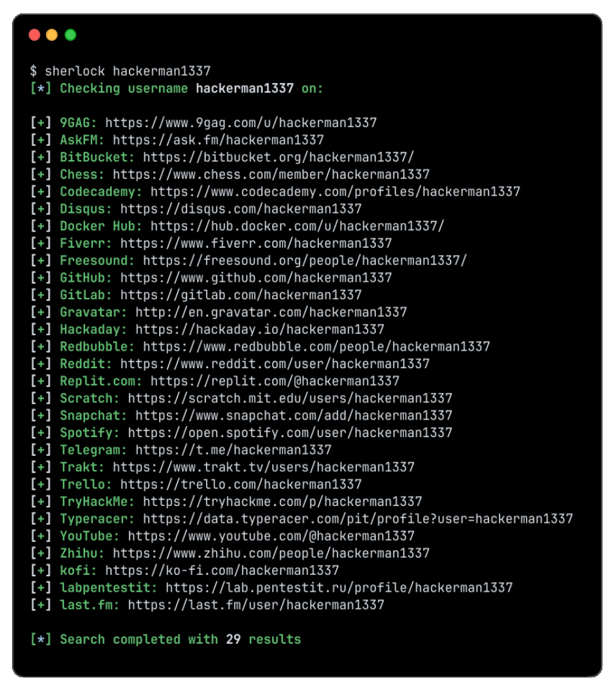
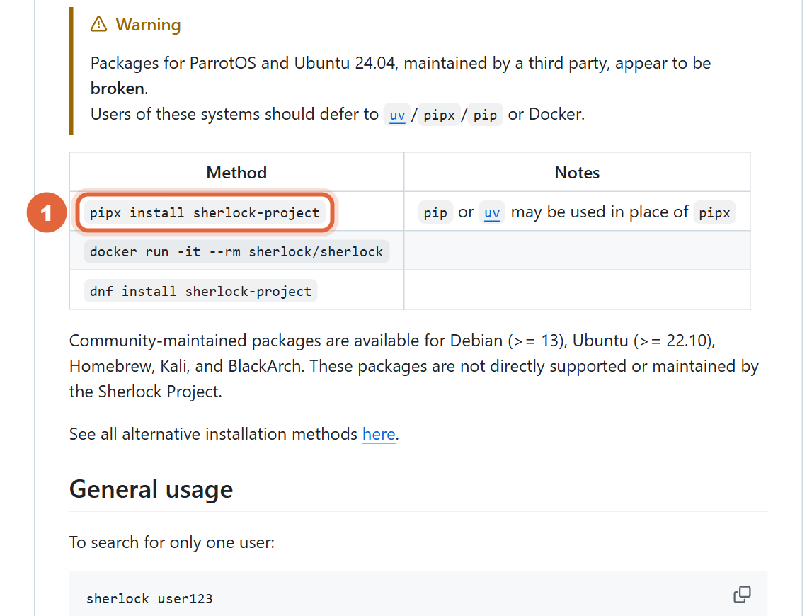
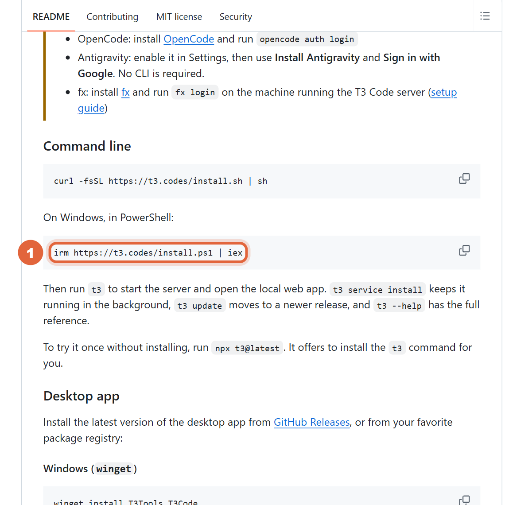
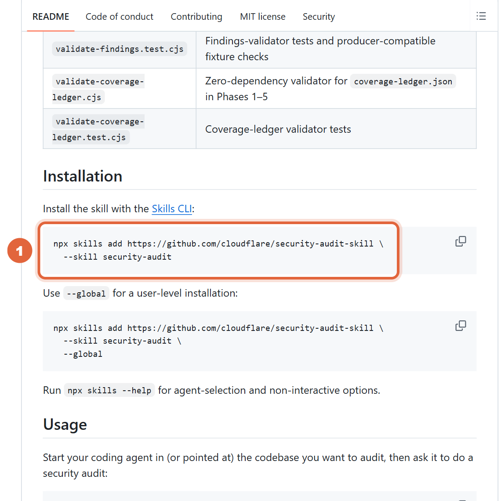
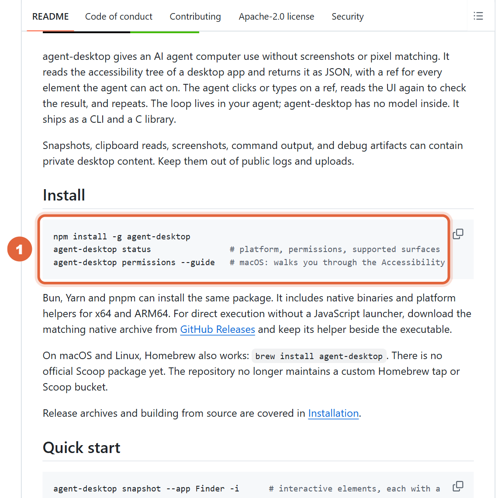
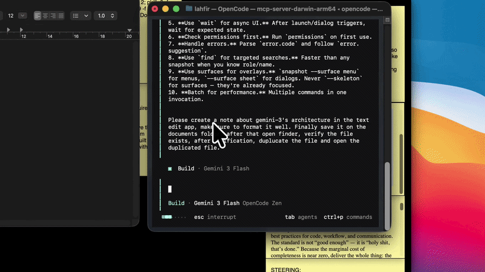
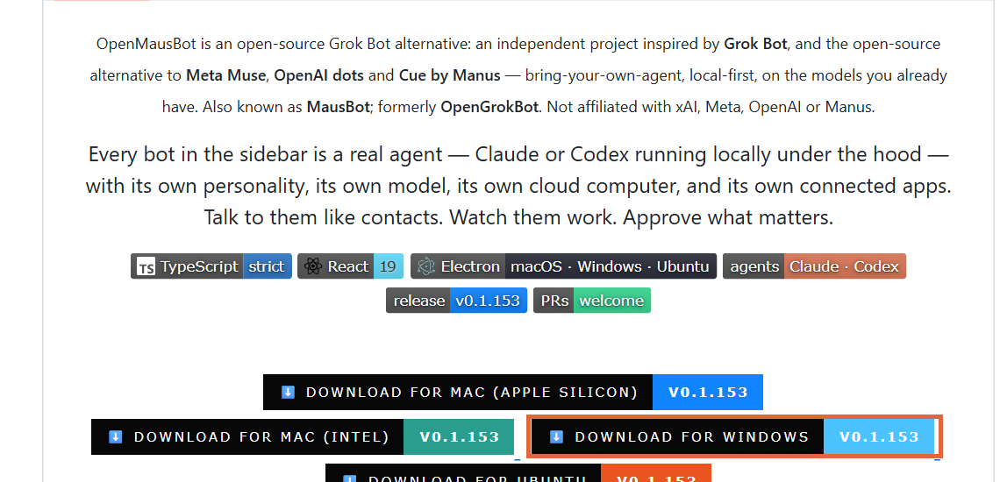
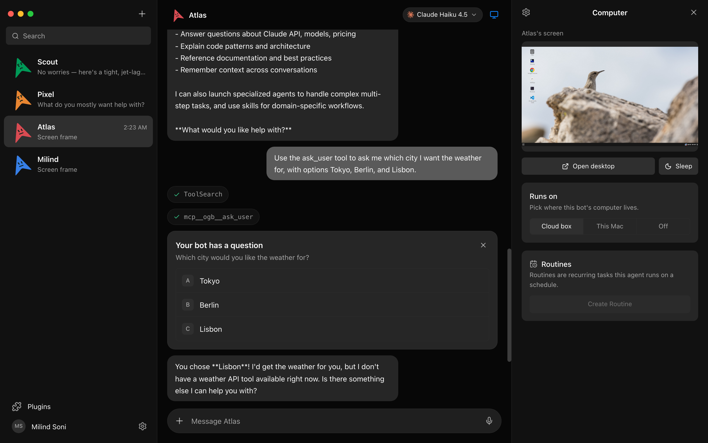
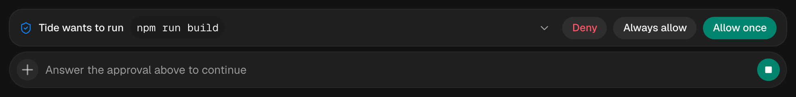

이번 주 깃허브에서 뜬 도구 5개 — 설치부터 사용 방법까지
공식 설치 문서 기준. 11월 12일 깃허브 주간 트렌딩에서 이번 주 별을 많이 받은 도구 다섯 개를 골랐어요. 다섯 개 다 무료 오픈소스(MIT·Apache-2.0)예요. ① 셜록 — 아이디 하나로 SNS 400곳 넘게 계정 찾기 ② T3 Code — 폰으로 내 컴퓨터의 클로드 코드·코덱스 부리기 ③ security-audit — 클라우드플레어의 보안 점검 스킬 ④ agent-desktop — AI가 내 컴퓨터 앱 버튼을 직접 누름 ⑤ OpenMausBot — 메신저처럼 AI 봇 팀 두기.

준비물
- 윈도우 PC(맥·리눅스도 다 돼요). 명령은 PowerShell 기준이에요
- 셜록: 파이썬(python.org에서 설치)
- security-audit·agent-desktop: Node.js(nodejs.org) + Claude Code나 Codex 같은 코딩 AI
- T3 Code·OpenMausBot: 쓰던 Claude Code나 Codex 로그인(구독 그대로 써요, 도구 자체는 무료)
사용 방법
① 셜록 — 깔기
PowerShell에 '셜록 깔기'를 넣어요(pipx가 없으면 pip install sherlock-project도 돼요). 사이트 목록은 400곳이 넘어요.

② 셜록 — 아이디 찾기
'셜록 쓰기'처럼 sherlock 뒤에 아이디를 넣어요. 그 아이디로 된 계정이 있는 사이트 주소가 한 줄씩 나오고, 같은 이름의 .txt 파일로도 남아요. 엑셀로 받으려면 --xlsx, 찾은 것만 보려면 --print-found를 붙여요. 여러 아이디는 띄어서 한 번에.
③ T3 Code — 깔고 켜기
먼저 Claude Code(또는 Codex)를 깔고 로그인해 둬요(claude auth login). 그다음 'T3 깔기'를 넣고 t3를 치면 내 컴퓨터에서 서버가 켜지고 웹 화면이 열려요. 데스크톱 앱이 편하면 winget install T3Tools.T3Code.

④ T3 Code — 폰으로 이어 쓰기
앱스토어·플레이스토어에서 'T3 Code' 앱을 받아 내 컴퓨터와 연결해요(공식 문서 docs/user/remote-access.md). 폰에서 한 줄 보내면 컴퓨터 속 클로드 코드가 일하고, 허락 요청도 폰에서 눌러요. 폰은 리모컨이라 컴퓨터는 켜 둬야 해요.
⑤ security-audit — 스킬 붙이기
'보안 스킬 깔기'를 넣으면 코딩 AI에 security-audit 스킬이 붙어요. 내 모든 프로젝트에서 쓰려면 끝에 --global.

⑥ security-audit — 점검 시키기
점검할 프로젝트 폴더에서 클로드 코드를 켜고 '보안 점검 요청'을 넣어요. 구조 파악 → 구멍 찾기 → 찾은 후보마다 다른 AI가 반박해 보기 → 확인된 것만 기록 순서로 돌아요. 결과는 기본으로 홈 폴더 security-audit-skill/<프로젝트>/run-N에 REPORT.md(보고서)·FINDINGS-DETAIL.md(자세히)·NEEDS-VALIDATION.md(더 확인할 것)로 남아요. 여러 번 돌리면 더 많이 찾아요(공식 시험에서 한 번은 여러 번 합친 것의 절반쯤).
⑦ agent-desktop — 깔기
'데스크톱 깔기'로 프로그램을 깔고 agent-desktop status로 되는지 봐요. 그다음 '데스크톱 스킬 붙이기'로 코딩 AI가 쓰는 법을 배우게 해요.

⑧ agent-desktop — 앱 맡기기
클로드 코드에 '데스크톱 시키기'처럼 말하면, AI가 그 앱의 버튼 목록을 읽어 버튼마다 번호(ref)를 받고 번호로 누른 뒤 다시 읽어서 확인해요. 기본은 내 마우스를 안 움직이고 쓰던 창도 안 뺏어요.

⑨ OpenMausBot — 받고 봇 만들기
README의 'Download for Windows'로 설치 파일을 받아요. Claude Code나 Codex가 이 PC에 깔려 있고 로그인돼 있으면 그대로 써요(Settings → Engines). 왼쪽 목록에 봇을 만들고 대화방처럼 말을 걸어요.


⑩ OpenMausBot — 봇 컴퓨터·허락
Computer 칸을 열면 봇의 클라우드 컴퓨터가 켜지고 일하는 화면이 보여요. 명령 실행·파일 수정 전엔 채팅에 허락 카드(Allow / Deny)가 떠서 내가 눌러야 진행돼요.


복사해서 쓰기
셜록 깔기
PowerShell
pipx install sherlock-project
셜록 쓰기
PowerShell, 아이디는 내 것으로
sherlock 내아이디 --print-found
T3 깔기
PowerShell
irm https://t3.codes/install.ps1 | iex
보안 스킬 깔기
PowerShell(Node.js 필요)
npx skills add https://github.com/cloudflare/security-audit-skill --skill security-audit
보안 점검 요청
점검할 프로젝트 폴더에서 켠 클로드 코드 입력칸
security audit this codebase
데스크톱 깔기
PowerShell(Node.js 필요)
npm install -g agent-desktop
데스크톱 스킬 붙이기
PowerShell
npx skills add https://github.com/vercel-labs/agent-desktop --skill agent-desktop
데스크톱 시키기
클로드 코드 입력칸
agent-desktop으로 메모장을 열고 '내일 10시 회의'라고 적어 줘. 누를 때마다 다시 읽어서 확인해 줘.
막힐 때
- sherlock 명령을 못 찾는대요
pipx 설치 뒤 PowerShell을 새로 열어요. 그래도 안 되면 python -m pip install sherlock-project로 깔고 python -m sherlock_project 내아이디로 돌려요. - 셜록 결과에 내가 아닌 계정이 있어요
같은 아이디를 다른 사람이 쓰는 경우예요. 주소를 눌러 직접 확인하세요. - T3 Code에 클로드가 안 보여요
Claude Code를 깔고 claude auth login을 먼저 해야 해요. T3 Code는 이 컴퓨터에 설정된 AI만 부려요. - agent-desktop 번호(@…:e8)가 PowerShell에서 깨져요
PowerShell은 @로 시작하는 말을 따로 해석해요. 번호를 작은따옴표로 감싸요('@s8f3k2p9:e8'). - 보안 점검이 '더 확인할 것'만 잔뜩 남겼어요
코드를 실제로 돌려 보는 격리 환경이 없으면 확인을 못 하고 needs_validation으로 남겨요(공식 README). 한 번 더 돌리면 이전 기록을 이어서 빈 곳을 더 봐요.
꼭 알고 쓰기
- 이번 주 별(11/12 깃허브 주간 트렌딩): 셜록 +13,213 · T3 Code +11,979 · security-audit +10,967 · agent-desktop +9,502 · OpenMausBot +8,951. 번호는 저희가 고른 TOP 5 순서예요.
- 셜록은 남의 계정을 캐서 괴롭히거나 사칭하는 데 쓰면 안 돼요. 내 아이디가 어디에 남아 있는지 보는 데 쓰세요.
- agent-desktop이 읽은 화면 목록·캡처에는 개인 정보가 담길 수 있어요. 공개 기록에 올리지 마세요(공식 README).
- T3 Code·OpenMausBot·security-audit·agent-desktop은 도구 자체는 무료지만, 부리는 클로드·코덱스는 각자 요금제가 있어야 해요.
- 저희는 직접 돌려 보지 않았어요. 이 정리는 공식 README 기준이고, 그림은 공식 자료예요.
도움이 되셨다면
@ai.antenna.kr
에서 바로 쓰는 AI 활용법을 계속 올립니다.